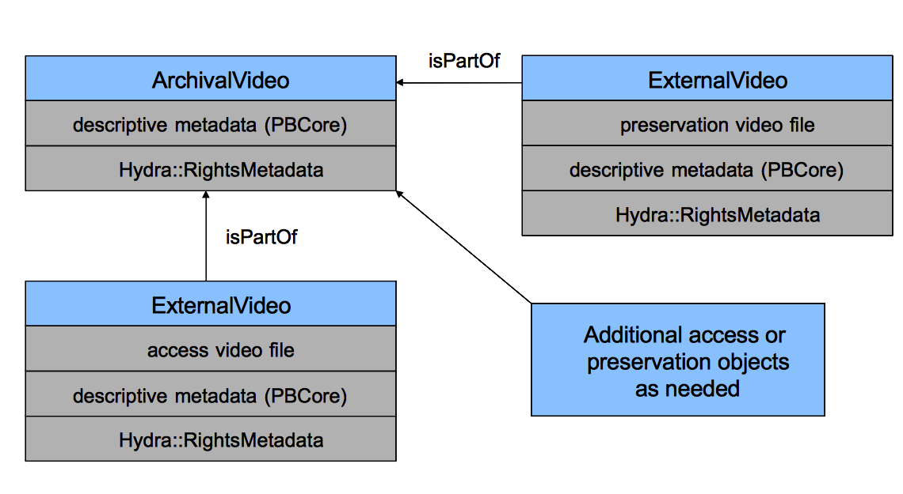
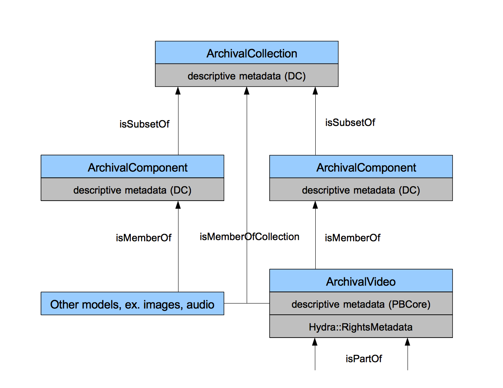

Hybrid Archival Collections Using Blacklight and Hydra
Adam Wead
Solr
Blacklight
Library materials
Archival collections
| MARC | = | one item |
| EAD | = | many items |
Extend Blacklight to search EAD
- Index collections and single items from a collection
- Search results yield:
- bibligraphic items (marc records)
- collections (single EAD)
- items within collections (parts of EAD)
- Series I: Artist Files
- Aerosmith
- Dylan, Bob
- Series VII: Audiovisual Materials
- Subseries 1: Audio
- Bowie, David
- Subseries 2: Video
- Van Halen
- Subseries 1: Audio
Welcome! Search our catalog...
Displaying items 1 - 4 of 547
1. Chronicles / Bob Dylan
2. Bob Dylan : forever young
 3. Guide to the Jeff Gold Collection (ARC.0037)
3. Guide to the Jeff Gold Collection (ARC.0037)
 4. Series I: Artist Files >> Dylan, Bob
4. Series I: Artist Files >> Dylan, Bob
Guide to the Jeff Gold Collection
Abstract
Sample finding aid displayed with Blacklight
Collection Inventory
Series I: Artist Files
Series VII: Audiovisual Materials
Digital content
Fedora
Hydra
- Defines Fedora objects using Ruby
- Manages RDF relationships among them
- Indexes metadata into Solr
Video Content in Fedora
Relate Fedora content to its archival collection
- Digitized content originates from sources in a collection
- Born-digital content is part of a series in a collection
- Collection metadtata already exists in Solr
Create RDF representations of collections
- Hydra in reverse -- query Solr for all collection metadata
- Create objects for each collection, series and subseries
- Tie everything together with RDF
- Re-export to our Blacklight Solr index

Guide to the Jeff Gold Collection
Abstract
Sample finding aid displayed with Blacklight
Collection Inventory
Series I: Artist Files
Series VII: Audiovisual Materials
Issues
- Terrible solr performance for series with 500+ items
- No EAD "round tripping"
- Trying to aim for MPLP
- Currently 60% complete
Thank you
Adam Wead
awead@rockhall.org
 @amsterdamos
@amsterdamos